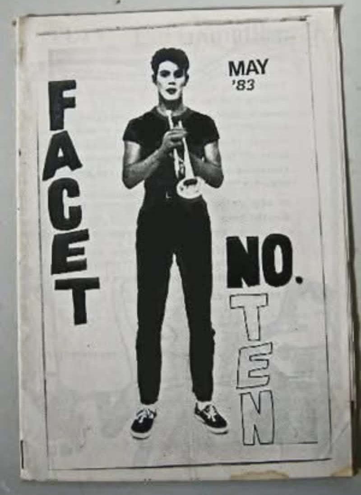
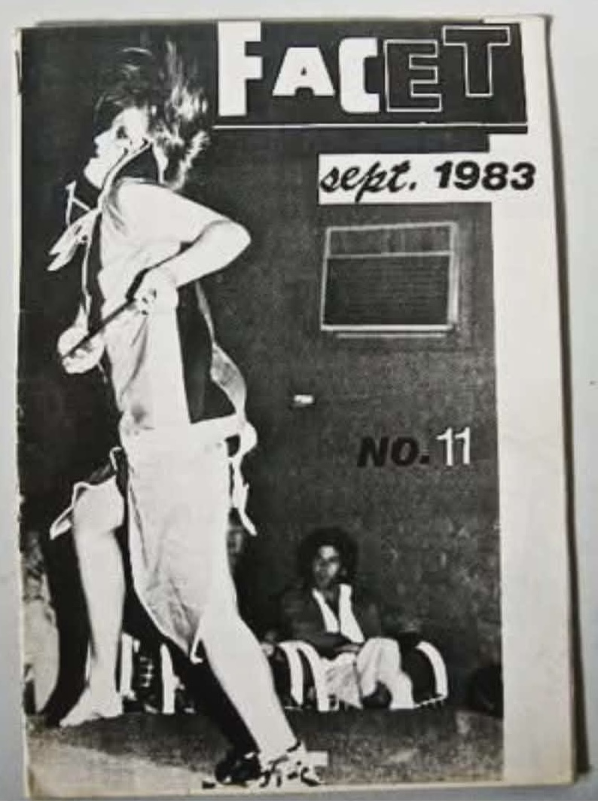
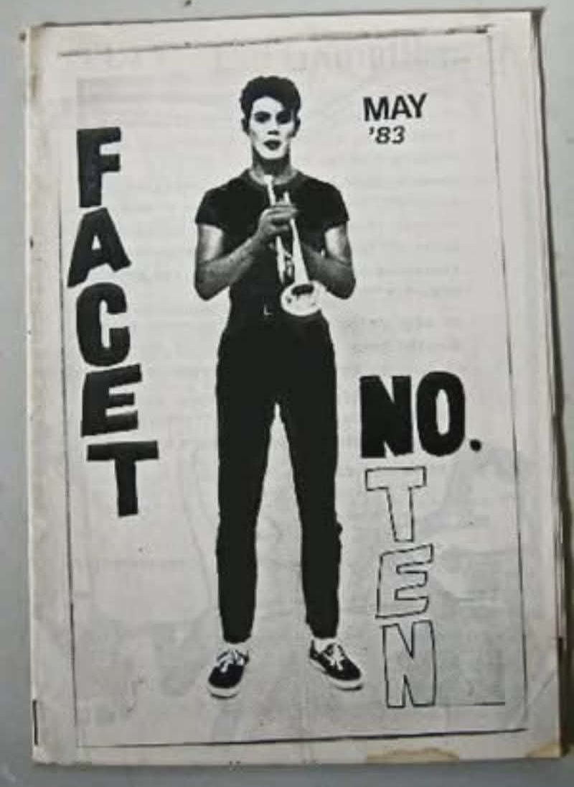
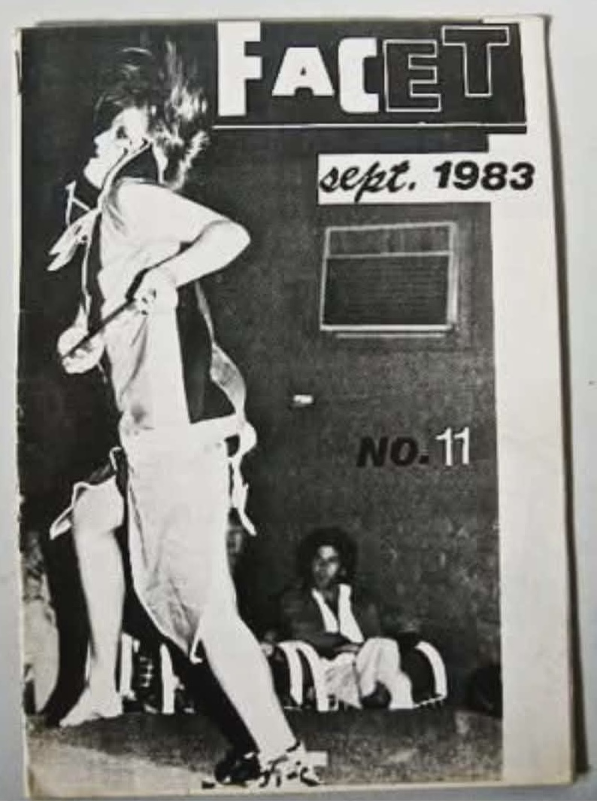
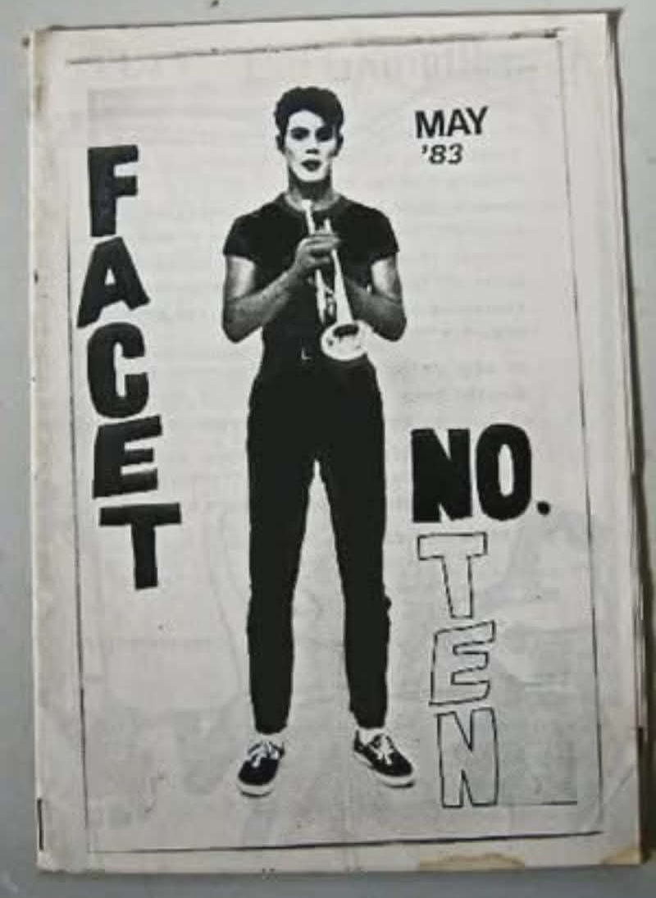
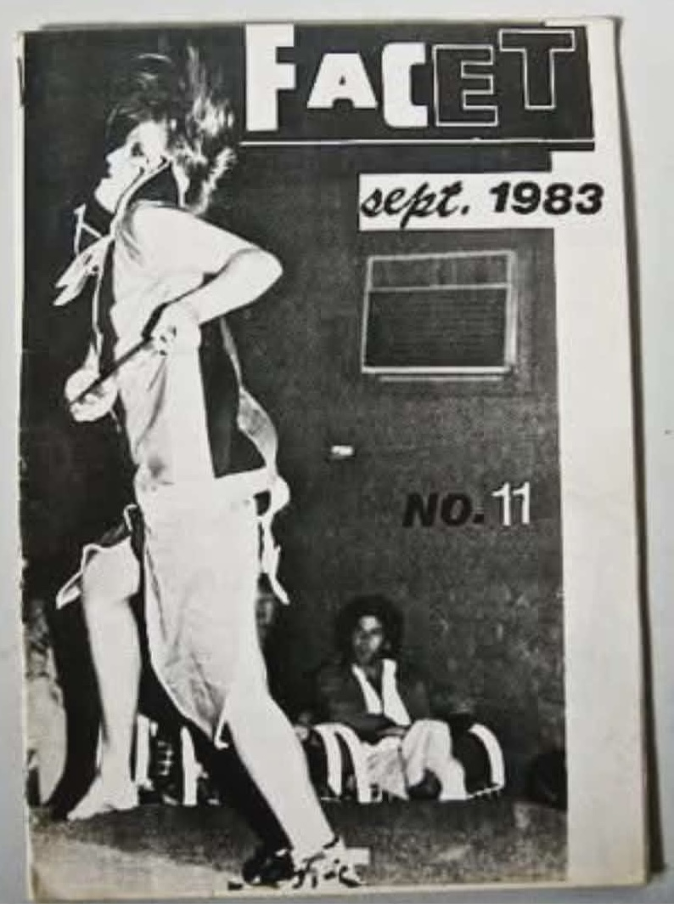
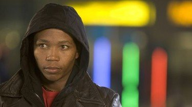
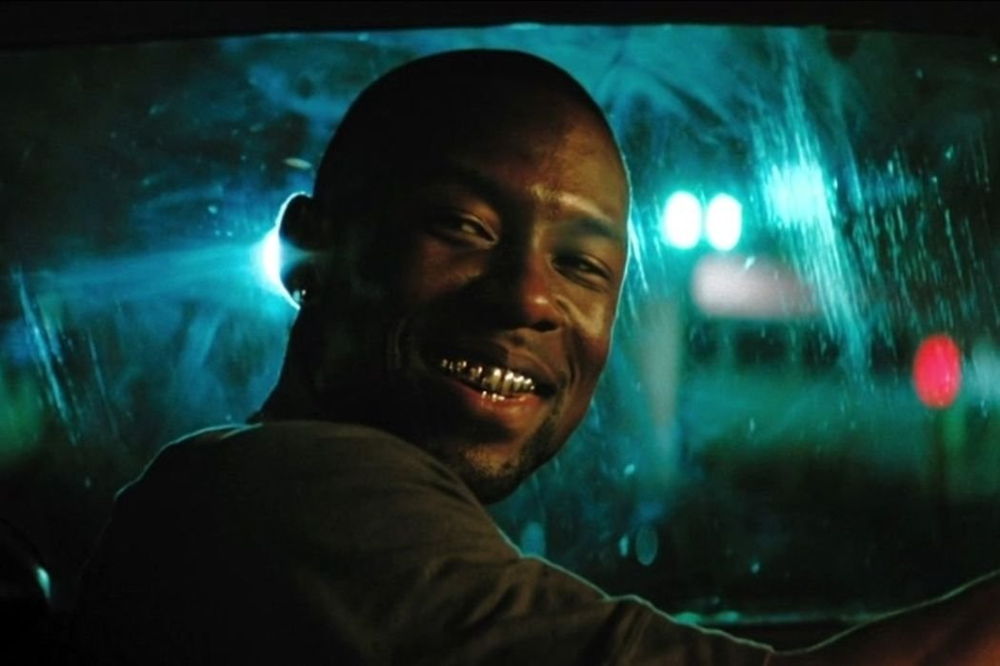
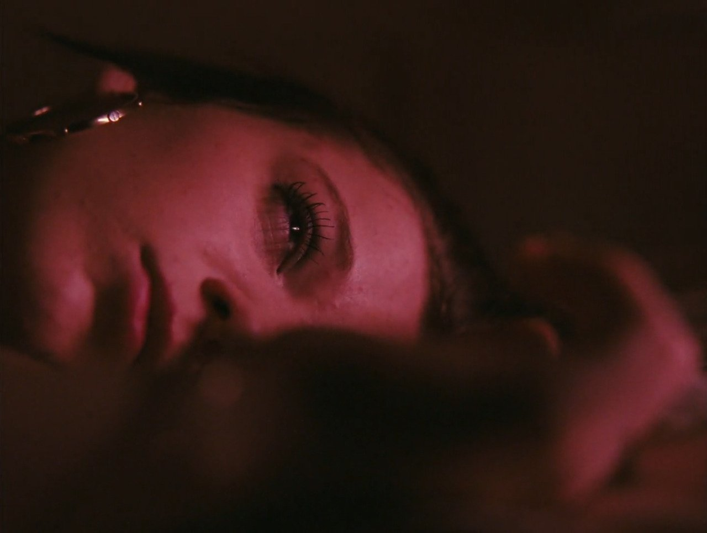

FACET Magazine — Durban, 1983. The alternative scene on paper. These are not reference images. These are real.
Based on a true story · South Africa · 1983
A fifteen-year-old boy paints himself into a harlequin to escape his small-town invisibility — and is swept into the streets of Johannesburg by a magnetic, damaged woman who promises to look after him. Over eighteen months of drugs, sex work, and survival, he discovers that the mask he built to be seen is the same mask he must remove to stay alive.
Paul Smit was fifteen when he painted his face and vanished into the streets of Johannesburg. Eighteen months beneath the surface — addiction, violence, sex work.
Survival


FACET Magazine — Durban, 1983. The alternative scene on paper. These are not reference images. These are real.
Paul Smit entrusted me with a story that has haunted him for years — a single photograph of Sandy, a fragment of memory that carries the weight of a lifetime. That kind of trust is sacred, and it demands a filmmaker's deepest commitment: to illuminate the truth without exploitation, to honor memory without compromise.
This is not a film about drugs. It is a film about what it feels like to be fifteen and invisible, and the precarious, intoxicating danger of being seen for the first time by someone who will shape the course of your life in ways you cannot yet understand.
The engine of this story is the tension between what Paul believes is happening and what the audience knows to be true — a gap that runs through every scene, subtle and relentless, building a psychological and emotional resonance that stays long after the film ends.
Paul and Sandy share a bond that exists entirely in the emotional realm — fierce, maternal, and at times unbearably predatory. She watches over him with a vigilance that leaves no corner of his life untouched, guiding him, holding him, shaping him in ways he cannot escape. He clings to her care, hungers for her attention, and cannot distinguish the safety she offers from the peril it carries. Their connection is sustaining and destabilizing, tender and consuming, a force that binds them together and marks them both in ways nothing else could — a quiet, relentless gravity that defines the contours of their lives.
Set in 1983 South Africa, at the height of apartheid violence, this story takes place in a society defined by systemic oppression, political brutality, and constant uncertainty. Amid curfews, raids, and pervasive fear, young people carved out hidden spaces for expression and survival, including underground alternative goth and harlequin scenes — a subculture largely invisible in cinema.
Within this world, the film explores untapped portrayals of gender and power: Sandy, an older woman whose maternal yet predatory presence defies conventional cinematic roles, and Paul, a young straight boy navigating survival, identity, and self-expression on society's margins. Both characters inhabit territory rarely seen on screen, offering audiences a story that challenges assumptions, illuminates invisible dynamics, and expands the emotional and social vocabulary of contemporary film.
Principal photography in South Africa. KwaZulu-Natal coast and Johannesburg inner city. All memoir locations still exist. 1983 setting. Apartheid is the air, not the story. SA film incentive: 20–25% rebate.
Faces — Durban

Left: Paul with white face paint and yellow hue. Right: Helge with pink background.
Left: Helga B&W. Right: The dancer in the club — Ruby, a regular.
"Why do you feel the need to dress this way?"
The conductor — the only adult who sees through the mask
Paul is fifteen. He lives in Umkomaas, a small conservative town on the KwaZulu-Natal coast. His parents drink. They come home at ten or eleven from the bowling club, find him on the couch, go to their room. He sleeps there most nights because his own room doesn't feel like his.
He breaks into the school hall and sleeps there instead. Walks the rafters at night. Raids the teachers' fridge. Spends his breaks dancing alone on stage, acting out stories no one watches. He cons twenty new spotlights out of the principal. He builds a city out of cardboard — a hundred tiny lights, an orange sky. He lies on the stage floor at night and watches it glow. The school play happens. The principal thanks him publicly. He listens to the applause. For a moment, he is worthwhile.
The only person who truly sees him is the mother of a girl killed crossing the tracks — a woman who makes him a custom outfit without judgment. The harlequin. She never once objects to the look.
On a Friday evening, Paul steals R96 from his mother's dresser, boards a train, transforms. White face, black triangles, black lips. At Faces, he dances alone and feels like a king.
Sandy materializes. "You look and dance fantastically." By dawn she has offered him Johannesburg. By the next evening she has forged a prescription, thrown a drafting set square into her mother's skull, and talked Paul into leaving home. His brother: "Do you know what you are doing?" Neil: "You don't know Sandy, and she is a world of trouble." Paul puts up a wall and packs a bag.
A man puts a gun to his head in a club restroom and pulls the trigger. The bullet ricochets off two walls and into his foot. Sandy kneels beside him and places two pills in his mouth. At a train station she sinks a needle into his arm. His body floods with cold liquid and his head fills with a wave of dreams. They all laugh at him. They stand on the highway.
Killmury is a squat on Smit Street. Second floor. Hippies who eat Hare Krishna food once a week and fight over chicken bones. Within ten minutes of arriving, police raid the building. Sandy is taken. An officer looks Paul in the eyes: "I don't know who you are or what you are doing here, but I can see you shouldn't be here. GO HOME." Paul does not go home. He makes four mugs of tea and waits.
Sandy returns. She cries in his arms — they raped her, she needs drugs. Then her tears dry. "Come; let's go raise some money. I want to have a good night."
Sandy gets a job at Aquarius Escorts. Paul is intrigued by the name because he is an Aquarian — he sees it as a good sign. He walks her to work at eight, picks her up at eleven. She tells him people pay her to escort them to dinners. He is happy. He does not know what an escort does.
"I don't want to be alone, so if you don't mind,
will you sit with me while I bathe?"
Sandy — the first bathtub scene
He had never seen a naked woman. He kept his eyes on hers or on the floor. This became a daily ritual. No drugs, no people. Just Sandy and Paul. It was nice.
Then came the first night at work. Sandy emerged from the car and shot straight inside. When she came out, something was wrong. She ran into his arms crying. She needed drugs right away. At Killmury she ran a bath. He sat at the foot of the tub. She told him how four men requested her. A garage. They made her remove her clothes. They placed her on the hood of the car. One revved the engine. The others inserted tools into her. They all had their way with her. She washed herself and continued to cry.
He was fifteen. He could not comprehend parts of the story. But he sat there. Every night. Because she asked him to.
She tells him she loves him. She buys him a Chelsea bun — the best food he has ever had. She spends every other cent on drugs. Their lives continue: sex for drugs, drugs for escape. Sleeping on a mattress on the floor. Sandy spent every penny she made. Life, for the most part, became a blur.
Men with guns drag her naked from the bath by her hair. "We are not interested in you; we want her." A thump on the head with the barrel. They pull her down the corridor and into a car. Two hours later she is thrown into the street with her ID. She becomes very quiet after that. Even the bath talks become calm. Something is gone.
Sandy moves in with a client. Paul is alone. Walking the streets. Begging money like Sandy taught him. From the Killmury balcony he watches police beat the rent boys. A man walks in the middle of the road covered in blood, screaming. No one helps. Paul is so numb he just watches. People come and go. Addicts steal each other's drugs. The dream of leaving seems further away. He realizes he is becoming just like them.
Five bathtub scenes. Same staging. Same two people. Everything else degrades.
"What am I doing; what am I doing?"
Paul — an empty street, two blocks from Killmury
He had been starving. He went from place to place in search of food and couldn't find a single morsel. He searched the clubs for Sandy and came up empty. Walking back to Killmury, he saw a man in a car touching himself. The thought came: "If I could do that for him, I could get paid and eat." He ran toward the car. The car sped away. He ran to the next block. Empty street.
He stopped in the middle of the road. For the first time in eighteen months, he heard his own voice.
He picks up his things. Walks to the highway. Thumb out. No goodbyes. No drugs. Nothing. He simply chooses to leave it all behind.
A watermelon fallen from a truck. The first food in days. Sweet nectar rushing down his throat. A truck driver who needs someone to keep him awake. Paul nods off. The horn jolts him back. They ride like that the whole way.
Durban at sunrise. The sky is orange. He has not noticed the sky in eighteen months.
A fancy car. Leather interior. He feels dirty sitting there. The man says nothing. Familiar landmarks through the window. Almost home.
He walks across the railway tracks. Stands outside his front door. He does not walk in.
He knocks.
Paul takes a bath. Clean water. No one across from him.
He falls asleep in his own bed.
His parents never asked about those eighteen months.
"Why don't you clean up and get some rest?
We can talk later; I'm glad you are home."
Paul's father
Lonely, creative, misaligned. Builds cardboard cities and sleeps on the couch. He is not broken — he is looking for a place that fits. Sandy becomes that place. The performance demands physical transformation: the harlequin at the start, the gradual stripping, the boy who knocks on his own door. Most of this role is in the eyes.
Magnetic. Methodical. Damaged beyond repair and incandescent with life at the same time. She is not a villain. The age gap sits in every scene without ever being named. The audience carries it. Paul does not.
Neil — "She is a world of trouble." Jackie — bursts out of a cubicle clutching money, cannot stop crying. Wayne — dragged down stairs by his feet. Shaun — first real friend, the motorbike, two lost brothers. The Woman Across the Tracks — made the harlequin. The Conductor — one scene, one question.
The definitive drug-descent film. LIFE HURTS shares the structural DNA but adds the bathtub confessional and relocates to apartheid South Africa.
Proved the global appetite for raw South African stories with unknown actors.
Three-act architecture. Identity through intimacy. LIFE HURTS uses the bathtub where Moonlight uses the ocean.
A teenage girl, an older man who enters her world with charisma and danger. Andrea Arnold's camera never flinches. LIFE HURTS inverts the gender dynamic — Sandy is the older figure, Paul the child — but the power imbalance is identical.
No existing film combines a teenage male protagonist, a magnetic female co-lead driving the descent, the bathtub-as-narrative-spine, and a 1980s South African setting. The male victim of emotional exploitation by a female figure is one of the most underrepresented dynamics on screen. Every comp was under $5M. Every one won major awards. That is the lane.
Paul Smit — today
Ayla Demirci — Writer / Director / Producer
Nashville, TN
Toronto, Berlin, or Cannes (Un Certain Regard). SA premiere: Durban International.
South African talent. Open call Durban + Johannesburg. Unknown leads.
Raw. Gritty. Bold.
"You cannot always tell where you are going,
yet in the end, you will know why you were there."
Paul Smit